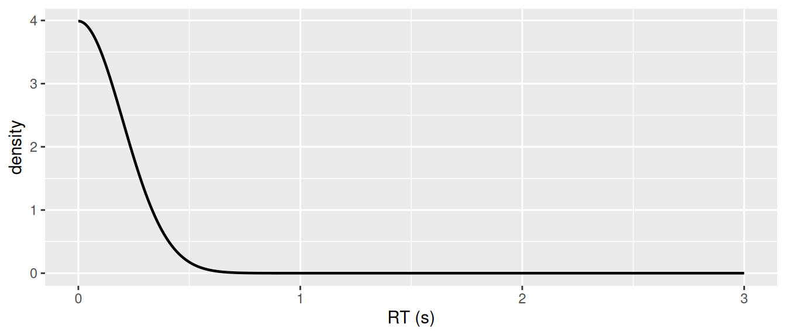
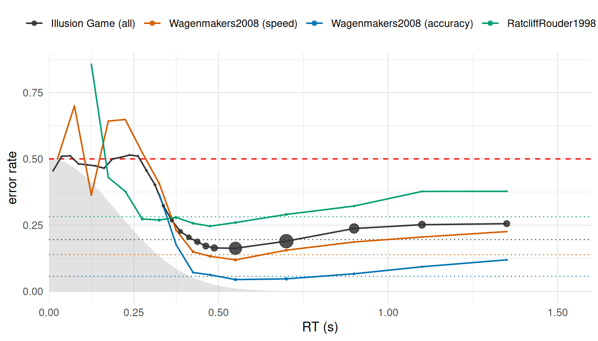
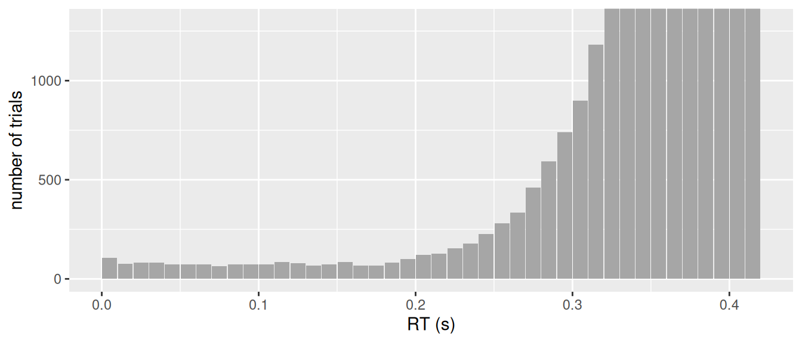
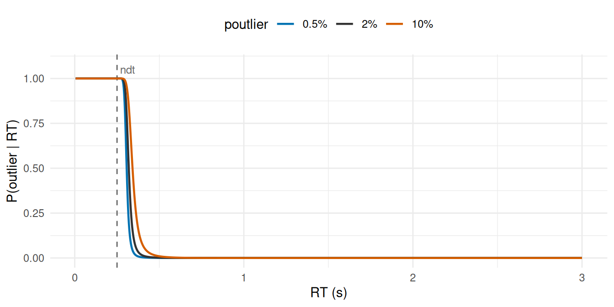

Every object used below is built by code shown in the article. Because the data are large, the results are cached; each section shows the code that produced its own piece, and the final chunk writes the cache. To rebuild from scratch, run the eval: false chunks in order.
The Problem of Non-Decision Time
A shifted reaction time model (e.g., Shifted LogNormal or any Evidence Accumulation Model) assigns exactly zero density to any response faster than its non-decision time ndt. The consequence is a hard boundary: if one response in the dataset is faster than the ndt a sampler is considering, the log-density is -Inf and the posterior collapses. ndt is therefore bounded above by the fastest observed response: a constant taken from the sample rather than a property of the participant or the condition. Worse, that bound is shared: one anomalously fast trial caps ndt for every condition and every participant in the model.
This is not specific to cogmod - every implementation of a shifted RT model has to deal with it. HDDM estimates the shift directly under a bounded prior and ships a p_outlier parameter with a uniform contaminant - the same mixture idea used below. HSSM estimates it over the range its likelihood-approximation networks were trained on. EMC2 and DMC put the shift on a log scale and lean on particle-based samplers, which tolerate a hard boundary by rejecting proposals that cross it. Gradient-based samplers cannot afford a cliff, so the mixture is what makes the problem tractable for HMC.
In cogmod, the boundary is removed by mixing the RT distribution with a proportion of responses from an outlier component.
Below ndt the first term is still zero, but the second is positive. The boundary becomes a finite cost rather than a wall, the log-density stays smooth and differentiable, and ndt can be estimated directly in seconds with nothing taken from the data.
Choosing the Outlier Component
g is a half Normal with scale 0.2 seconds, and that is what every number below uses. Four properties decide the shape, and every obvious candidate fails at least one.
Analytic properties of each candidate
hn <- function(s) function(x) 2 * dnorm(x, 0, s)
ht <- function(s, nu) function(x) 2 * dt(x / s, nu) / s
candidates <- list(
"Half-Normal(0.2) [shipped]" = hn(0.2),
"Half-t(0.3, df = 3) [<= 0.2.0]" = ht(0.3, 3),
"Half-Cauchy(0.3)" = ht(0.3, 1),
"LogNormal(log 0.15, 1.5)" = function(x) dlnorm(x, log(0.15), 1.5),
"Exponential(mean 0.15)" = function(x) dexp(x, 1 / 0.15),
"Uniform(0, 0.35)" = function(x) ifelse(x <= 0.35, 1 / 0.35, 0),
"Uniform(0, 2)" = function(x) ifelse(x <= 2, 1 / 2, 0)
)
props <- do.call(rbind, lapply(names(candidates), function(nm) {
g <- candidates[[nm]]
m <- try(integrate(function(z) z * g(z), 0, Inf,
subdivisions = 4000)$value, silent = TRUE)
data.frame(
g = nm,
# density relative to its value near zero: 1.00 is perfectly flat
flatness = sprintf("%.2f / %.2f / %.2f",
g(0.05) / g(1e-4), g(0.15) / g(1e-4), g(0.25) / g(1e-4)),
tail = format(g(3) / g(1e-4), digits = 2),
mean = if (inherits(m, "try-error") || m > 10) "divergent" else sprintf("%.3f", m)
)
}))
knitr::kable(props, col.names = c("g", "flatness at 0.05 / 0.15 / 0.25 s",
"g(3 s), relative to peak", "mean"))| g | flatness at 0.05 / 0.15 / 0.25 s | g(3 s), relative to peak | mean |
|---|---|---|---|
| Half-Normal(0.2) [shipped] | 0.97 / 0.75 / 0.46 | 1.4e-49 | 0.160 |
| Half-t(0.3, df = 3) [<= 0.2.0] | 0.98 / 0.85 / 0.66 | 0.00085 | 0.331 |
| Half-Cauchy(0.3) | 0.97 / 0.80 / 0.59 | 0.0099 | divergent |
| LogNormal(log 0.15, 1.5) | 221.92 / 96.73 / 54.77 | 0.66 | 0.462 |
| Exponential(mean 0.15) | 0.72 / 0.37 / 0.19 | 2.1e-09 | 0.150 |
| Uniform(0, 0.35) | 1.00 / 1.00 / 1.00 | 0 | 0.175 |
| Uniform(0, 2) | 1.00 / 1.00 / 1.00 | 0 | 1.000 |
-
Flat at the origin. The fastest responses are the ones least plausibly decisions, so
gmust not thin out there. The flatness column gives the density relative to its value near zero, so1.00is perfectly flat. A LogNormal rises and collapses toward zero exactly where protection is needed most. An Exponential has the opposite defect, peaking at zero with maximal slope. Both encode a claim nobody would defend: that anticipations are far more likely at e.g., 150 ms than at 3 ms. The half-Normal, half-t and uniform are all genuinely flat. -
Dead by the time real decisions start. This is the criterion the half-t fails, and it is why it was replaced in 0.2.1. Its tails are heavier than every decision density in the package, so far-out slow responses end up better explained by
gthan by the model itself: atpoutlier = 0.02, against a shifted LogNormal, a 5 s response was attributed to the outlier component with probability 0.86, and the crossover sat at 3.86 s.ndtthen gets pulled up behind it. The half-Cauchy and the wide uniform fail this worse. The slow tail belongs to the decision family - that is whatshapeincogmod_loggamma()andsigmadriftincogmod_invgaussian()are for. -
Strictly positive everywhere. The whole point of mixing
gin is that no response should ever have zero density; a single one that does makes the log-likelihood-Infand puts back a cliff of exactly the kind being removed. That is what rules out the uniforms, which are otherwise flat, tail-free and well behaved: put the edge at 0.35 s and a contaminant at 0.36 s under anndtof 0.40 s is declared impossible. A half-Normal is never zero - merely negligible, which is a different thing. -
Finite mean.
posterior_epred()needsE[RT]. A half-Cauchy has no finite mean, so it would return infinity.
The half-Normal is the only candidate that satisfies all four, and it does so without a trade: because exp(-x^2 / 2s^2) annihilates the far tail at any scale, flatness near zero and tail weight are not bought against each other the way they are for a Student-t. At 0.2 s it holds 76% of its peak density at 0.15 s and 46% at 0.25 s - against 85% and 66% for the half-t it replaced - while being 16 orders of magnitude lighter at 3 s.
ggplot() +
geom_function(fun = function(x) 2 * dnorm(x, 0, 0.2),
n = 1000, xlim = c(0.0001, 3), linewidth = 0.8) +
labs(x = "RT (s)", y = "density")
Reaction Times Must Be in Seconds
The scale is 0.2 s, a constant, and it is not configurable. Whatever value it took, the component’s job is to stay flat across the range ndt plausibly occupies - the ndt prior puts that at 0.20 to 0.45 s - and then to disappear. 0.2 s does that: 68% of its mass falls below 0.2 s and 92% below 0.35 s, and a contaminant landing just under a late ndt of 0.42 s still has a log-density of -4.6, where the half-t gave -4.0. Nothing that used to be covered is starved.
Up to 0.2.0 the scale was a minrt argument in the unit of the data, which made the likelihood equivariant to that unit. That argument was removed in 0.2.1, because the equivariance was already fictional end to end: cogmod_priors() shifted only the ndt prior with it, while the sigmandt prior of cogmod_ddm(), the sigmadrift prior of cogmod_invgaussian() and the mu priors are all stated in seconds outright - and cogmod_priors() is not optional. The package works in seconds; the constant now says so, and one argument disappears from every family, every density and every stanvars().
Feeding it milliseconds fails silently, which is worth knowing about. The outlier component’s log-density at RT = 400 is about -2e6, so it contributes nothing anywhere in the data and the mixture collapses back to the unmixed shifted family: poutlier goes to zero and ndt is pinned by the fastest observed response again - exactly the boundary this parameterization exists to remove. Nothing errors, and the chains still initialise, because the decision density itself stays finite. Divide by 1000 before fitting.
The Data
Validating this needs reaction times that have not been trimmed, which is unusual - almost every published dataset has its fast responses removed before distribution. The Illusion Game data are untrimmed, large, and include accuracy, which will let us identify contaminant trials without an RT model at all.
Code
repo <- paste0("https://raw.githubusercontent.com/RealityBending/",
"IllusionGameComputational/refs/heads/main/data/")
df <- rbind(
read.csv(paste0(repo, "illusion_part1.csv")),
read.csv(paste0(repo, "illusion_part2.csv")),
read.csv(paste0(repo, "illusion_part3.csv"))
)
desc <- list(
n = nrow(df), n_ppt = length(unique(df$Participant)),
rt_range = range(df$RT), err = mean(df$Error),
n_fast = sum(df$RT < 0.30), pct_fast = 100 * mean(df$RT < 0.30)
)#> 963,885 trials, 2,221 participants, RT from 0.001 to 6.00 s
#> responses faster than 0.30 s: 4671 (0.485%)Participants judged which of two shapes was larger or longer under various visual illusions - a two-alternative discrimination, so chance performance is an error rate of 0.5. The fastest recorded response is 1 ms.
Model fits below use one sub-study (95,639 trials, 256 participants) for speed; descriptives use everything.
Model-Free Evidence
Accuracy alone establishes whether fast contamination is real, without fitting anything. A genuine decision, however hurried, should perform above chance. A key press with no decision behind it should be at chance however fast it was.
To see whether the pattern is task-general, the same curve is drawn for two very different paradigms, both shipped with rtdists and both taken uncensored - including the trials the original authors flagged for removal, since those are precisely the ones of interest.
The first is the lexical decision data of Wagenmakers et al. (2008), speed_acc, split by its speed/accuracy instruction. The second is the brightness discrimination of Ratcliff and Rouder (1998), rr98: a perceptual two-choice task with no response conflict, which matters because in a flanker or Stroop task - and, to a lesser extent, in an illusion judgement - fast errors can be genuine responses driven by a competing stimulus dimension rather than contamination. rr98 has no such competing dimension, and it ships raw: its outlier column flags responses below 0.2 s or above 2.5 s instead of deleting them.
Code
caf_of <- function(rt, err, brk, series) {
b <- cut(rt, brk, include.lowest = TRUE)
ag <- data.frame(e = err, b = b) |>
summarize(n = length(e), m = mean(e), .by = b)
i <- match(ag$b, levels(b))
data.frame(lo = brk[i], hi = brk[i + 1], n = ag$n,
err = ag$m, series = series)
}
# Illusion Game: dense fast tail, so fine bins are affordable
caf <- caf_of(df$RT, df$Error,
c(seq(0, 0.50, by = 0.025), 0.6, 0.8, 1.0, 1.2, 1.5, 6),
"Illusion Game (all)")
# Lexical decision of Wagenmakers (2008), ALL trials. `response == "error"` marks uninterpretable
# trials, for which accuracy is undefined. Its fast tail is far sparser, so
# coarser bins are needed.
data(speed_acc, package = "rtdists")
sa <- speed_acc[speed_acc$response != "error", ]
sa$Error <- as.integer(as.character(sa$response) != as.character(sa$stim_cat))
brk_s <- c(seq(0, 0.50, by = 0.05), 0.6, 0.8, 1.0, 1.2, 1.5, 3, 1200)
for (cd in levels(sa$condition)) {
s <- sa[sa$condition == cd, ]
caf <- rbind(caf, caf_of(s$rt, s$Error, brk_s,
paste0("Wagenmakers2008 (", cd, ")")))
}
# Brightness discrimination of Ratcliff & Rouder (1998), ALL trials: the
# `outlier` column flags rt < 0.2 or rt > 2.5 rather than removing them, so the
# untrimmed data are already here. Pooled over the speed/accuracy instruction
# for the figure; the split is quantified in the next section.
data(rr98, package = "rtdists")
caf <- rbind(caf, caf_of(rr98$rt, as.integer(!rr98$correct), brk_s,
"RatcliffRouder1998 (all)"))
caf$mid <- (caf$lo + caf$hi) / 2
caf$series <- factor(caf$series, levels = c(
"Illusion Game (all)", "Wagenmakers2008 (speed)",
"Wagenmakers2008 (accuracy)", "RatcliffRouder1998 (all)"))
# Error rate of unambiguously genuine decisions, per series
baseline <- do.call(rbind, lapply(levels(caf$series), function(sr) {
d <- caf[caf$series == sr & caf$lo >= 0.4 & caf$hi <= 1.5, ]
data.frame(series = sr, err_good = sum(d$err * d$n) / sum(d$n))
}))
baseline$series <- factor(baseline$series, levels = levels(caf$series))The outlier component is shaded behind, normalized so its maximum sits at chance.
dens <- data.frame(x = seq(0.001, 2, length.out = 600))
dens$y <- (2 * dnorm(dens$x, 0, 0.2)) / (2 * dnorm(0, 0, 0.2)) * 0.5
ggplot(caf[caf$mid < 2 & caf$n >= 5, ], aes(x = mid, y = err, colour = series)) +
geom_area(data = dens, aes(x = x, y = y), inherit.aes = FALSE,
fill = "grey75", alpha = 0.45) +
geom_hline(yintercept = 0.5, linetype = "dashed", colour = "red") +
geom_hline(data = baseline, aes(yintercept = err_good, colour = series),
linetype = "dotted", linewidth = 0.4, show.legend = FALSE) +
geom_line(linewidth = 0.6) +
geom_point(aes(size = n), alpha = 0.85) +
scale_x_continuous(breaks = c(0, 0.25, 0.5, 1, 1.5), expand = expansion(add = c(0, 0.1))) +
scale_size_area(max_size = 5, guide = "none") +
scale_colour_manual(values = c("grey20", "#D55E00", "#0072B2", "#009E73")) +
labs(x = "RT (s)", y = "error rate", colour = NULL) +
theme_minimal() +
theme(legend.position = "top") +
coord_cartesian(xlim = c(0, 1.5))
Below 0.30 s the error rate sits at chance, then climbs to the genuine-decision baseline by about 0.45 s. Fast contamination is real, it occupies roughly [0, 0.30] s, and it accounts for 0.5% of trials in the Illusion Game data. A model that assigns these responses zero density is not being conservative; it is calling them impossible.
Three features of the comparison matter.
The plateau replicates across paradigms while the baseline does not. The four series settle at 0.196, 0.138, 0.057, 0.282 respectively - four different tasks and instructions give four different genuine error rates - yet every series with a usable fast tail climbs toward chance there. The contamination signature is task-general; the baseline is not.
The two rtdists datasets carry the point less cleanly than the Illusion Game, in opposite ways. In lexical decision the fast bins hold only ten to fifteen trials each, so they scatter widely around 0.5 rather than tracing it smoothly. Brightness discrimination has the opposite problem: three highly practiced laboratory subjects produce almost nothing below 0.2 s, and its genuine error rate is already high because the task is hard, so the climb from baseline to chance is real but compressed. Neither weakens the conclusion - they are different failure modes of the same measurement, and both point the same way.
The outlier component covers where the plateau is, and its decline roughly tracks the recovery of accuracy. That is the shape argument made visually: g should be at full strength while responses are at chance, and fading as genuine decisions take over.
The rate is condition-dependent, which the next section quantifies.
The observed shape also supports a flat component. Counts are flat from about 0.01 to 0.19 s and only rise as genuine responses begin:
h <- hist(df$RT[df$RT <= 0.60], breaks = seq(0, 0.60, by = 0.01), plot = FALSE)
hist_fast <- data.frame(mid = h$mids, count = h$counts)
fast <- hist_fast[hist_fast$mid < 0.42, ]
ggplot(fast, aes(x = mid, y = count)) +
geom_col(width = 0.0095, fill = "grey65") +
coord_cartesian(ylim = c(0, max(fast$count[fast$mid < 0.32]) * 1.1)) +
labs(x = "RT (s)", y = "number of trials")
How Many Outliers, and How Variable?
The conditional accuracy function puts the boundary at about 0.30 s, so the proportion of responses below it is a usable empirical estimate of poutlier - and therefore a basis for priors.
Code
CUT <- 0.30
# Per participant, restricted to those with enough trials to estimate a rate
n_i <- tapply(df$RT, df$Participant, length)
f_i <- tapply(df$RT < CUT, df$Participant, sum)
keep <- n_i >= 100
p_i <- (f_i / n_i)[keep]
# Zeros have no logit, so cap them at half a trial before transforming
p_capped <- pmin(pmax(p_i, 0.5 / n_i[keep]), 1 - 0.5 / n_i[keep])
rates <- list(
illusion = list(
n_ppt = sum(keep),
pooled = sum(f_i[keep]) / sum(n_i[keep]),
q = quantile(p_i, c(0, .25, .5, .75, .9, .99, 1)),
pct_zero = 100 * mean(p_i == 0),
pct_above5 = 100 * mean(p_i > 0.05),
mean = mean(p_i), sd = sd(p_i),
logit_mean = mean(qlogis(p_capped)),
logit_sd = sd(qlogis(p_capped)),
logit_sd_nonzero = sd(qlogis(p_i[p_i > 0]))
),
lexical = do.call(rbind, lapply(levels(sa$condition), function(cd) {
s <- sa[sa$condition == cd, ]
nn <- tapply(s$rt, s$id, length)
ff <- tapply(s$rt < CUT, s$id, sum)
pp <- (ff / nn)[!is.na(nn)]
data.frame(condition = cd, pooled = sum(ff, na.rm = TRUE) / sum(nn, na.rm = TRUE),
median = median(pp), min = min(pp), max = max(pp),
n_zero = sum(pp == 0), n_ppt = length(pp))
})),
# Only three subjects, so per-participant spread is not informative here.
# What this dataset shows instead is the instruction effect, in isolation:
# the same three people, the same task, two response deadlines.
brightness = do.call(rbind, lapply(levels(rr98$instruction), function(cd) {
s <- rr98[rr98$instruction == cd, ]
data.frame(instruction = cd, pooled = mean(s$rt < CUT), n_trials = nrow(s))
}))
)#> Illusion Game, 2,215 participants with >= 100 trials
#> pooled rate 0.0048 (0.48%)
#> per-participant mean 0.0053 sd 0.0206
#> quantiles (0/25/50/75/90/99/100): 0.0000 0.0000 0.0000 0.0021 0.0083 0.1121 0.2375
#> participants with none 72%
#> participants above 5% 3.1%
#> on the logit scale: mean -6.24, sd 1.08 (1.28 among non-zero)| condition | pooled | median | min | max | n_zero | n_ppt |
|---|---|---|---|---|---|---|
| accuracy | 0.0008 | 0.000 | 0 | 0.0052 | 12 | 17 |
| speed | 0.0106 | 0.001 | 0 | 0.0646 | 6 | 17 |
| instruction | pooled | n_trials |
|---|---|---|
| speed | 0.3171 | 12153 |
| accuracy | 0.0093 | 12205 |
Four things follow, all of them practical.
The 0.30 s cut is a property of the paradigm, not a constant. Brightness discrimination makes this unmissable: under the speed instruction 31.7% of trials fall below 0.30 s, against 0.9% under the accuracy instruction - the same three people doing the same task. Those are not contamination. Their error rate at 0.25-0.30 s is 0.273, essentially the genuine-decision baseline, so they are simply fast decisions under a deadline. A cut calibrated on one task will over-count on a faster one, which is exactly why the rest of this article estimates a rate rather than applying a threshold. Treat the numbers below as priors for the paradigms that produced them.
The pooled rate is well under 1%. About 0.5% in the Illusion Game, and 0.08% to 1.1% in lexical decision depending on instruction. On the logit scale that is around -5.3, so a weakly informative prior such as normal(-5, 1) on the poutlier intercept is centred at about 0.7% and puts roughly 95% of its mass between 0.1% and 5% - tight enough to keep chains away from the region where half the dataset is called contamination.
It is extremely unevenly distributed. The per-participant standard deviation (0.0206) is about four times the mean (0.0053), the median participant has 72% none at all, and the maximum is 23.8%. This is not a homogeneous nuisance rate: most people never fast-guess, and a small minority do it constantly.
So a random intercept on poutlier is worth it, and the observed spread suggests what to expect: a logit-scale between-participant SD of roughly 1.1, which is large. A prior like exponential(1) or a half-normal(0, 1) on that SD is in the right range.
Warning
Two caveats. The logit-scale figures are inflated by the 72% of participants with no fast responses, whose rate has to be capped before transforming - the distribution is a spike near zero plus a long right tail, not a normal on the logit scale, so a random intercept will fit it only approximately. And participants at the top of the range are not contributing noisy data so much as not doing the task; screening them is a separate decision from modelling the rate.
Priors Are Not Optional
Important
brmsgives a flat, improper prior to the intercept of any custom-family parameter it does not recognise, which here means bothndtandpoutlier. Fitting without priors does not fail loudly - it returns numbers, and the numbers are nonsense:Estimate Rhat Bulk_ESS ndt_Intercept -2.137016e+14 2.43 4.9 poutlier_Intercept 3.010229e+14 2.20 5.2This is not confined to awkward datasets: a clean simulation with a single shift and 2% fast contamination fails the same way. Use
cogmod_priors().
The likelihood has two flat directions, and a flat prior turns each of them into an improper posterior.
poutlier toward 1. The likelihood becomes g alone. On a logit link that region sits at infinity: past about logit(poutlier) = 40 the gradient with respect to poutlier is identically zero, so the chain random-walks outward forever. It has infinite volume, and against a flat prior infinite volume wins. Since 0.2.1 it is at least a far worse fit than it was - thousands of log-likelihood units below the sensible mode rather than hundreds - because a half-Normal cannot explain a slow response at all, so ndt and the decision parameters no longer drop out of the density completely there. The prior is still required.
ndt toward 0. On a log link this is the other infinity. Once ndt is negligible against the fastest response the model is just an unshifted LogNormal, and the gradient with respect to log(ndt) vanishes exponentially. This one has nothing to do with the mixture - it is inherent to putting a positive shift on a log scale - and it is the reason a prior on poutlier alone is not enough.
ndt is also unbounded above, where the mixture has removed the sharp likelihood penalty that a hard boundary would supply. Only the prior discourages an implausibly long non-decision time.
cogmod_priors() fills in every ndt and poutlier slot brms would leave flat, for the model you are actually fitting:
f <- brms::bf(RT ~ 1, sigma ~ 1, ndt ~ 1, poutlier ~ 1 + (1 | Participant),
family = cogmod_lognormal())
brms::brm(f, data = df,
prior = cogmod_priors(f, df),
init = cogmod_init(f, df),
stanvars = cogmod_stanvars(f),
backend = "cmdstanr")It reads brms::get_prior() rather than guessing, so it cannot produce a prior that matches no parameter - 0 + Intercept, interactions, group-level terms and smooths are all handled because none of them are assumed. It touches only slots brms left flat, and only for those two parameters: mu and sigma keep the proper student_t intercepts brms already gives them. The result is passed through brms::validate_prior(), so what comes back is a brmsprior object: the same class returned by brms::get_prior() and brms::prior(). It prints as the complete prior table, but can be composed with c().
Overriding a prior, and the same set written by hand
priors <- c(
cogmod_priors(f, df),
brms::prior(normal(-2, 0.3), class = "Intercept", dpar = "ndt")
)The values regularize both flat directions while keeping the prior mass in plausible regions. Slopes get normal(0, 0.2) and group-level SDs exponential(1): on a log or a logit link a flat slope prior is not as harmless as it looks, and an unconstrained group-level SD lets individual participants reach the flat regions even when the population intercept is well behaved.
ndt is a location in time, stated in seconds like everything else in these families. sigma (an SD on the log scale) and poutlier (a proportion) are unitless.
What each one means once pushed through its link:
Implied prior ranges on the natural scale
softplus <- function(x) log1p(exp(x))
implied <- function(parameter, mean, sd, inv, scale) {
v <- inv(qnorm(c(0.025, 0.5, 0.975), mean, sd))
data.frame(parameter = parameter,
prior = sprintf("normal(%.1f, %.1f)", mean, sd),
`2.5%` = v[1], median = v[2], `97.5%` = v[3],
`on the scale of` = scale, check.names = FALSE)
}
knitr::kable(rbind(
implied("mu", -1, 1, exp, "median decision time (s)"),
implied("sigma", 0, 1, softplus, "SD of log decision time"),
implied("ndt", -1.2, 0.2, exp, "non-decision time (s)"),
implied("poutlier", -5, 1, plogis, "proportion of trials")
), digits = 3)| parameter | prior | 2.5% | median | 97.5% | on the scale of |
|---|---|---|---|---|---|
| mu | normal(-1.0, 1.0) | 0.052 | 0.368 | 2.612 | median decision time (s) |
| sigma | normal(0.0, 1.0) | 0.132 | 0.693 | 2.092 | SD of log decision time |
| ndt | normal(-1.2, 0.2) | 0.204 | 0.301 | 0.446 | non-decision time (s) |
| poutlier | normal(-5.0, 1.0) | 0.001 | 0.007 | 0.046 | proportion of trials |
poutlier. normal(-5, 1) is centred at about 0.7%, in line with the pooled rates found above, and keeps the degenerate region far into the tail. exponential(1) on the between-participant SD matches the spread observed earlier (a logit-scale SD of about 1.1) while still pooling hard toward a common rate when a dataset gives no evidence of heterogeneity.
ndt. normal(-1.2, 0.2) puts the non-decision time between about 165 and 550 ms, concentrating prior mass on the usual range for keypress responses. This is a convention informed by the RT literature rather than something demonstrated here, and it is the prior most worth revisiting: a task with an unusual motor requirement, or reaction times recorded from a different zero point, will need it moved.
mu and sigma. Both are weakly informative and mostly there to keep warmup sane; the table gives their reach. They assume RT in seconds, like everything else in this family. Neither should be doing real work in a dataset of any size - if changing them moves your conclusions, the model is under-identified for a reason worth finding.
Note
Two of these are location priors on intercepts, so they describe the reference level only.
cogmod_priors()also fills in slopes, withnormal(0, 0.2)onclass = "b"forndtandpoutlier- tighter than the intercept prior, since on a log or logit link a slope of that size already moves the parameter across most of its plausible range.
Does the Choice of the Outlier Distribution Matter?
The hyperparameters of g are a regularizing choice, not a claim about how guesses are distributed. So the test is not “are these the right values” but “does the answer depend on them”.
Code
sub <- df[df$Dataset == "IllusionGameValidation", ]
rt <- sub$RT
nll <- function(p, gf, free_w = TRUE) {
mu <- p[1]; sg <- exp(p[2]); nd <- exp(p[3])
w <- if (free_w) plogis(p[4]) else 0
d <- ifelse(rt > nd, dlnorm(pmax(rt - nd, 1e-300), mu, sg), 0)
v <- -sum(log((1 - w) * d + w * gf(rt)))
if (is.finite(v)) v else 1e10
}
fitm <- function(gf, free_w = TRUE) {
st <- c(log(median(rt) - 0.2), log(0.5), log(0.2), qlogis(0.01))
if (!free_w) st <- st[1:3]
o <- optim(st, nll, gf = gf, free_w = free_w,
control = list(maxit = 8000, reltol = 1e-10))
c(exp(o$par[3]), if (free_w) plogis(o$par[4]) else 0, -o$value)
}
sens <- do.call(rbind, lapply(names(candidates), function(nm) {
r <- fitm(candidates[[nm]])
data.frame(component = nm, ndt = r[1], poutlier = r[2], logLik = r[3])
}))
r0 <- fitm(candidates[[1]], free_w = FALSE)
sens <- rbind(sens, data.frame(component = "none (poutlier = 0)",
ndt = r0[1], poutlier = 0, logLik = r0[3]))
rownames(sens) <- NULL
fitinfo <- list(n = nrow(sub), n_ppt = length(unique(sub$Participant)),
min_rt = min(rt))| g | ndt (s) | poutlier | logLik |
|---|---|---|---|
| Half-Normal(0.2) [shipped] | 0.3243 | 0.0076 | -6278.1 |
| Half-t(0.3, df = 3) [<= 0.2.0] | 0.3292 | 0.0116 | -6062.2 |
| Half-Cauchy(0.3) | 0.3269 | 0.0151 | -6022.4 |
| LogNormal(log 0.15, 1.5) | 0.3230 | 0.0101 | -6358.1 |
| Exponential(mean 0.15) | 0.3217 | 0.0073 | -6448.5 |
| Uniform(0, 0.35) | 0.3306 | 0.0081 | -5863.0 |
| Uniform(0, 2) | 0.3302 | 0.0307 | -6101.9 |
| none (poutlier = 0) | 0.2000 | 0.0000 | did not fit |
#> ndt across all seven components: 0.322 to 0.331 s (9 ms range)Three things follow.
ndt is effectively invariant. Components differing by orders of magnitude in shape, location and boundedness all land within about 10 ms of each other, which is what a regularizing device should deliver.
poutlier is not invariant, ranging from 0.007 to 0.031. It is a rate defined relative to an assumed reference distribution, not an absolute proportion of bad trials, so it is not comparable across differently specified models. Report the component alongside it.
Without any outlier component the model cannot be fitted at all. The last row is a failure, not a poor estimate: with a fastest response of 0.007 s the likelihood has no usable region and the optimizer never leaves its starting value.
Recovery
Invariance says the estimate is stable, not correct.
Recovery by maximum likelihood, 25 replications per condition
set.seed(7)
nll_rec <- function(p, x) {
mu <- p[1]; sigma <- exp(p[2]); ndt <- exp(p[3]); poutlier <- plogis(p[4])
d <- -sum(dcogmod_lognormal(x, mu, sigma, ndt, poutlier, log = TRUE))
if (is.finite(d)) d else 1e10
}
fit_one <- function(x) {
start <- c(log(median(x) - 0.8 * min(x)), log(0.5), log(0.8 * min(x)),
qlogis(0.02))
o <- optim(start, nll_rec, x = x, control = list(maxit = 8000))
c(ndt = exp(o$par[3]), poutlier = plogis(o$par[4]))
}
rec <- do.call(rbind, lapply(c(0.12, 0.35), function(true_ndt) {
v <- replicate(25, fit_one(
rcogmod_lognormal(600, mu = -0.7, sigma = 0.5, ndt = true_ndt, poutlier = 0.02)
))
data.frame(truth = true_ndt,
ndt = sprintf("%.4f (%.4f)", mean(v["ndt", ]), sd(v["ndt", ])),
poutlier = sprintf("%.4f (%.4f)", mean(v["poutlier", ]),
sd(v["poutlier", ])))
}))
knitr::kable(rec, row.names = FALSE,
col.names = c("true ndt", "estimated ndt (sd)",
"estimated poutlier (sd)"))| true ndt | estimated ndt (sd) | estimated poutlier (sd) |
|---|---|---|
| 0.12 | 0.1197 (0.0364) | 0.0198 (0.0061) |
| 0.35 | 0.3498 (0.0283) | 0.0211 (0.0068) |
Both recover, at a short non-decision time and a long one, with poutlier close to its true 0.02.
Per-Trial Outlier Probabilities
poutlier is a rate, not a classification. The mixture nonetheless assigns each response a posterior probability of having come from the outlier component, returned by p_outlier():
f <- brms::bf(RT ~ 1, sigma ~ 1, ndt ~ 1, poutlier ~ 1,
family = cogmod_lognormal())
m <- brms::brm(f, data = df,
prior = cogmod_priors(f, df),
init = cogmod_init(f, df),
stanvars = cogmod_stanvars(f),
backend = "cmdstanr")
head(p_outlier(m))That probability is the mixture responsibility, and it is a deterministic function of the parameters, so its shape can be drawn without fitting anything. The curve below uses the same expression p_outlier() evaluates, at illustrative values (mu = -0.9, sigma = 0.5, ndt = 0.25, giving a median RT of 0.66 s), for three different rates.
The responsibility curve
MU <- -0.9; SIGMA <- 0.5; NDT <- 0.25
responsibility <- function(rt, poutlier, mu = MU, sigma = SIGMA, ndt = NDT) {
g <- 2 * dnorm(rt, 0, 0.2) # outlier component
f <- ifelse(rt > ndt, dlnorm(pmax(rt - ndt, 1e-300), mu, sigma), 0)
r <- poutlier * g / (poutlier * g + (1 - poutlier) * f)
r[!is.finite(r)] <- 1 # both components vanish: attribute to the outlier
r
}
resp <- expand.grid(rt = seq(0.005, 3, length.out = 1200),
poutlier = c(0.005, 0.02, 0.10))
resp$p <- responsibility(resp$rt, resp$poutlier)
resp$poutlier <- factor(resp$poutlier, labels = c("0.5%", "2%", "10%"))
ggplot(resp, aes(x = rt, y = p, colour = poutlier)) +
geom_vline(xintercept = NDT, linetype = "dashed", colour = "grey40") +
annotate("text", x = NDT, y = 1.05, label = "ndt", hjust = -0.2,
size = 3.2, colour = "grey40") +
geom_line(linewidth = 0.8) +
scale_colour_manual(values = c("#0072B2", "grey20", "#D55E00")) +
scale_y_continuous(limits = c(0, 1.08), breaks = seq(0, 1, 0.25)) +
labs(x = "RT (s)", y = "P(outlier | RT)", colour = "poutlier") +
theme_minimal() +
theme(legend.position = "top")
ndt. Everything below it is attributed to the outlier component with certainty; the probability then collapses within about 150 ms and climbs again in the slow tail.
Three things are visible, and all three are properties of the mixture rather than of any threshold.
Below ndt the probability is exactly 1, because the decision component has no density there at all - nothing else could have produced the response. This is the cliff from the first section, seen from the other side: the region that makes an unmixed model unfittable is simply one the outlier component owns outright.
The collapse is fast but not a step. From 1 at ndt the curve falls to near zero within roughly 150 ms, and where it crosses depends on the estimated rate: at poutlier = 0.5% a 0.30 s response is 0.73, at 10% it is 0.98. The same trial is graded differently depending on how much contamination the rest of the dataset implies - which is the whole difference between estimating a rate and applying a cutoff.
It does not rise again in the slow tail. Up to 0.2.0 it did, because the half-t had heavier tails than the LogNormal, so far-out slow responses were eventually better explained by the outlier component than by the model - and ndt got pulled up behind them. That was a defect, and replacing the component with a half-Normal is what removed it. The slow tail is now entirely the decision family’s business, which also means the model will not quietly absorb slow contaminants for you: see the section below.
The grading is driven by evidence rather than a cutoff, and it agrees with the conditional accuracy function without having been shown any accuracy data.
One caveat matters: a low probability does not mean a trial is clean, only that the data cannot tell. A lapse that happens to produce a plausible reaction time is statistically invisible, and the mixture handles it correctly by accounting for its rate without pretending to identify it. A trimming rule cannot do this - a cutoff removes only what looks extreme, which is both the wrong trials and not enough of them.
Predictions Leave the Outliers Out
For plotting effects the outlier component is a nuisance: it drags expected values toward its own mean and adds a spike of implausibly fast draws to any posterior predictive sample. It is also, as the sensitivity analysis above showed, a regularizing device rather than a claim about how guesses are distributed - so simulating from it means simulating from something the model does not assert.
So posterior_predict() and posterior_epred() describe the decision process alone by default, as if poutlier were zero. Nothing needs to be done to get this, and it carries through the packages built on brms, like modelbased or marginaleffects.
In the case where one wants the full mixture, for instance for posterior predictive checks, cogmod implements the with_outliers() function to restore it (and without_outliers() to reverse it). The same flag can be set up front with cogmod_lognormal(predict_outliers = TRUE) during model fitting.
brms::pp_check(with_outliers(m))The reason why it is implemented as a flag (toggleable with a function) that rides on the family rather than as an argument of predict() is because brms sends the ... of posterior_predict() and posterior_epred() to prepare_predictions(), not down to the family method - posterior_epred reaches it with prep and nothing else - and insight, modelbased and marginaleffects inherit that. So posterior_epred(m, predict_outliers = TRUE) is silently ignored rather than erroring. Carrying it on the object is what makes it work through all of them.
log_lik() has no equivalent. The likelihood is the mixture; dropping a component from it would not be a different summary of the same model, but a different model. One consequence is worth knowing: posterior_predict() and log_lik() do not describe the same distribution by default. This also desyncs loo_pit(), loo_predict() and bayes_R2() from loo(), not just hand-rolled checks - anything that compares a simulated replicate against the likelihood should be run on with_outliers(m).
Slow Responses Are Your Problem
The mixture is designed to handle primarily fast contamination. Extending the same logic upward fails: in Figure 2 the error rate rises again for slow responses, from 0.163 around 0.5 s to 0.286 in the slowest bin. That is not contamination - slow trials are hard trials, so difficulty confounds RT and accuracy at that end.
A slow contaminant is statistically indistinguishable from the right tail of the RT distribution itself, so it cannot be identified, and leaving such trials in biases ndt upward. Filter implausibly slow responses before fitting. Unlike fast responses, the model cannot do it for you.
Summary
- A shifted RT distribution gives zero density below
ndt, bounding non-decision time by the fastest observed response. On untrimmed data this makes the unmixed model unfittable, not merely biased. - Mixing in an outlier component removes the boundary, keeps the log-density smooth, and lets
ndtbe estimated directly in seconds. -
gmust be flat at the origin, must have died away before real decisions begin, must never be exactly zero, and must possess a finite mean. Half-Normal(0, 0.2 s) is the only common candidate that satisfies all four; the half-t used up to 0.2.0 failed the second, competing with the model for the slow tail. The scale is a constant in seconds, so reaction times have to be supplied in seconds. - Priors on
ndtandpoutlierare required, not advisory:brmsleaves both flat and the likelihood has two flat directions, so the posterior is improper without them.cogmod_priors()fills them in. - Accuracy confirms the premise independently: fast responses climb toward chance across three very different paradigms.
- The rate is well under 1% pooled, but wildly uneven between participants - most have none, a few have a great many - so a random intercept on
poutlieris usually justified. - Where the fast region ends is a property of the paradigm. Under a speed deadline, genuine decisions cross a cut calibrated on a slower task, which is why the model estimates a rate instead of applying a threshold.
- Predictions exclude the outlier component by default;
with_outliers()puts it back for a like-for-like posterior predictive check. -
ndtmoves ~10 ms across wildly different components;poutlierdoes not transfer between them and should be reported with its component. - Slow contamination is unidentifiable and must be filtered beforehand.